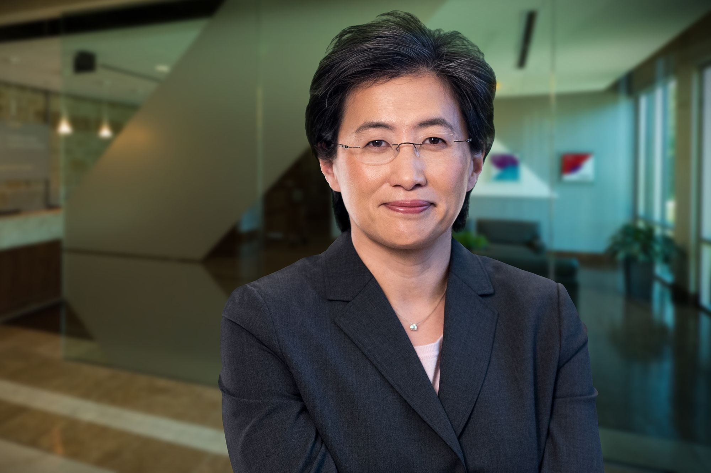

Su Lisa (en chino simplificado,) es una ingeniera eléctrica y ejecutiva comercial estadounidense, nacida en Taiwán. Es la actual directora ejecutiva y presidenta de Advanced Micro Devices (AMD). Al principio de su carrera, trabajó en Texas Instruments, IBM y Freescale Semiconductor en puestos de ingeniería y administración.
Bajo su liderazgo, la compañía logró crecer significativamente y competir con grandes empresas del sector. Gracias a su trabajo, AMD mejoró su rendimiento en el mercado y se convirtió en una de las marcas más reconocidas en el ámbito tecnológico.